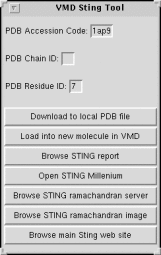

<!--#set var="TITLE" value="STING Plugin, Version 1.0"-->
<!--#include virtual="/Research/vmd/include/header-vmd.shtml"-->

<table border="0">
<tr>
<td colspan="2">
The <a href="http://trantor.bioc.columbia.edu/SMS/">STING</a> plugin provides 
an easy-to-use interface for downloading
<a href="http://www.rcsb.org/">PDB</a> structures, and accessing the 
<a href="http://trantor.bioc.columbia.edu/SMS/">STING database</a> 
entries for selected residues and chains interactively from within VMD.
</td>
</tr>

<td>
  
</td>
</tr>
</table>

<!--#include virtual="/Research/vmd/include/footer-vmd.shtml"-->

